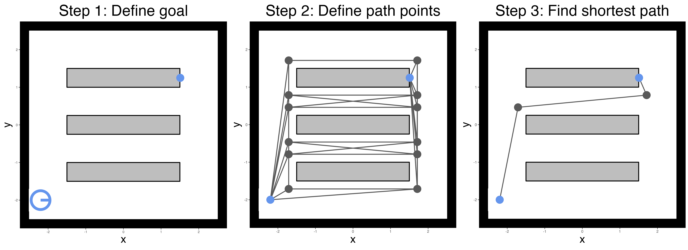
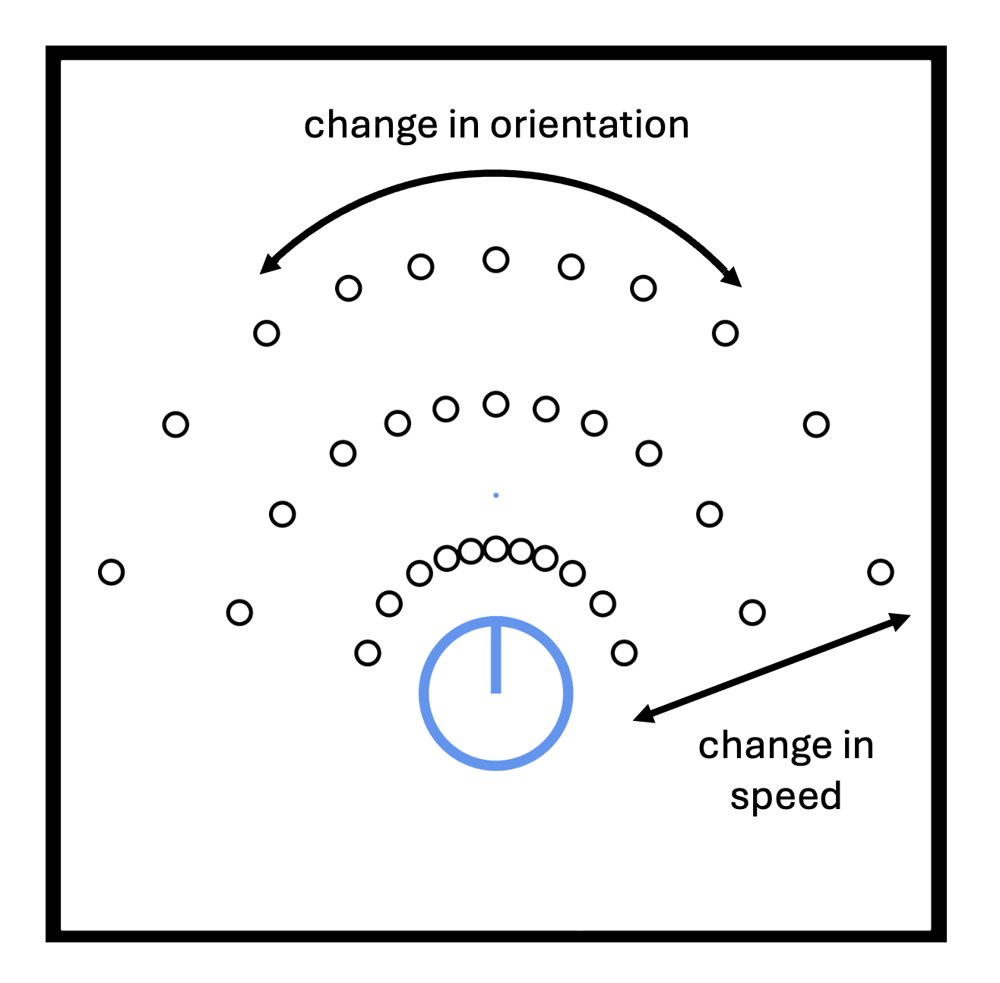
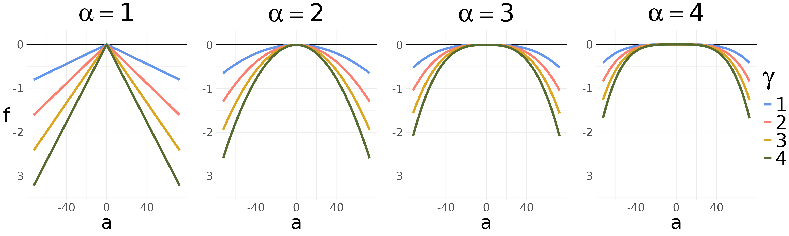
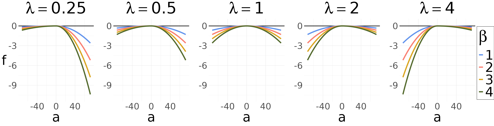
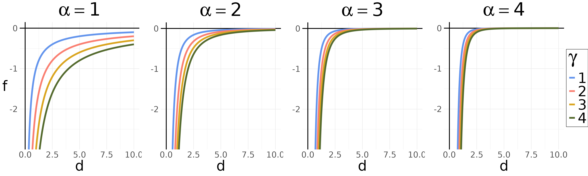
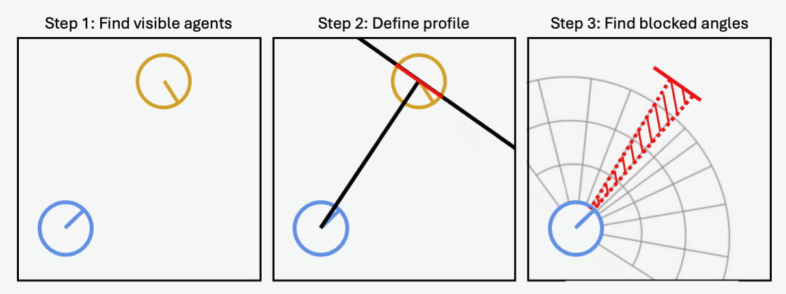
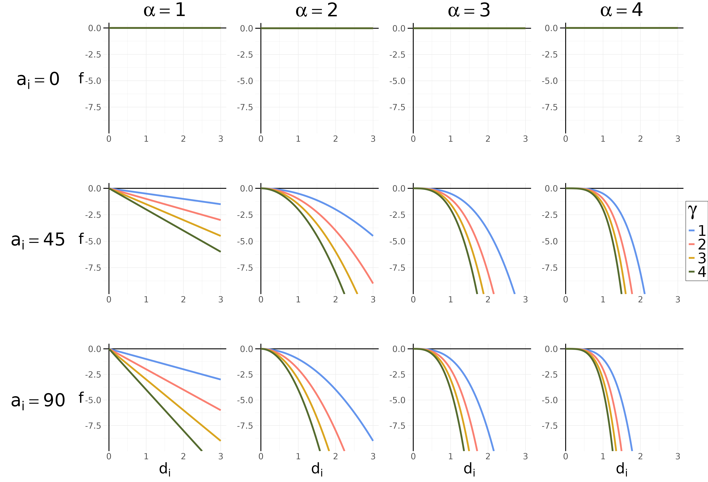
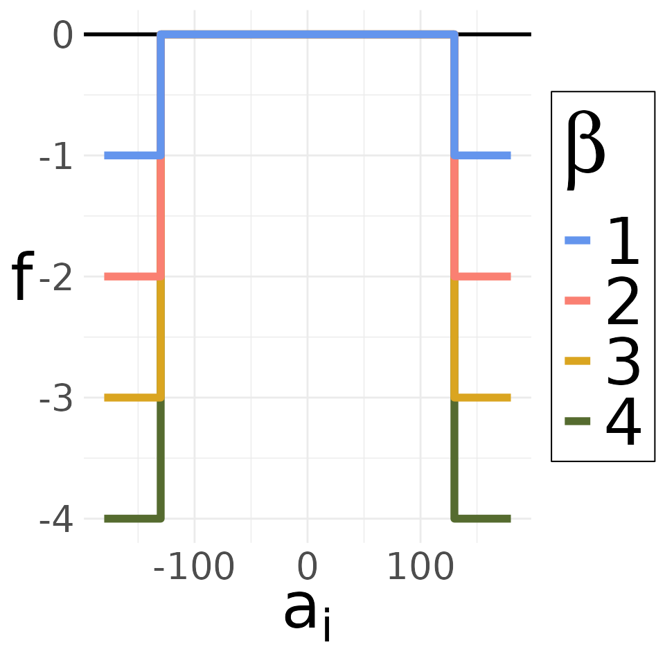
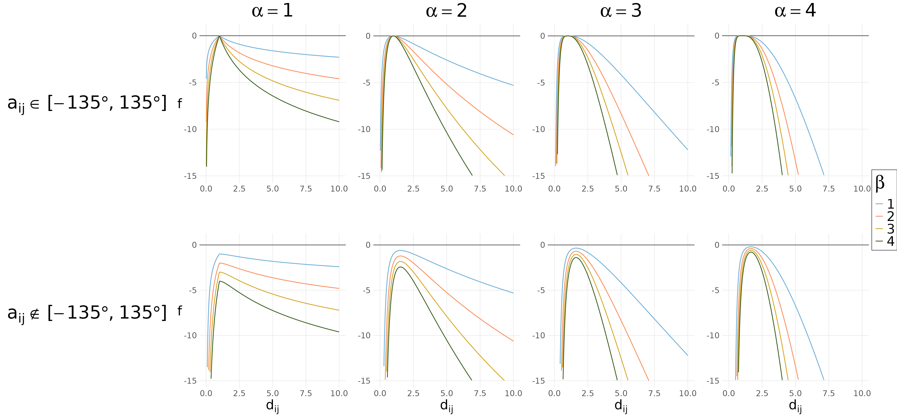

On this page, we provide the reader with a general introduction to the Minds for Mobile Agents (M4MA) pedestrian model. The model was developed as an alternative to physics-inspired pedestrian models that often assume pedestrian are all the same (e.g., Helbing & Molnár, 1995; Schadschneider et al., 2002). This is a reasonable assumption in crowds that are sufficiently dense to limit the expression of individual differences, but it limits the applicability of these models to only these high-density situations. The M4MA model aims to be more broadly applicable, allowing users to understand pedestrian behavior in both high- and low-density situations while accounting for the inherent heterogeneity that exists in pedestrians.
Building Blocks
The M4MA is based on the discrete-choice models of walking behaviour proposed by Antonini et al. (2006), Campanella et al. (2004), and Robin et al. (2009). These models fit within a broader utility-based framework proposed by Hoogendoorn & Bovy (2004) who proposed that pedestrians made decisions at three levels: (a) the strategic level that is concerned with the activities the pedestrians want to do within a particular environment, (b) the tactical level that is concerned with choosing a route to that location and adapting to changes in the environment, and (c) the operational level that is concderned with step-by-step decisions.
The M4MA makes a same distinction between the three interconnected
levels of choice to understand pedestrian behavior. In the remainder of
this text, we dive into the details of each level and how they are
implemented in predped. If not done yet, it may be useful
to take a look at the Getting
Started page before engaging with this material.
Strategic Level
On the strategic level, the M4MA assumes that pedestrians plan a particular set of goals that they want to achieve within the environment. Before a pedestrian enters a room, they therefore already have a preplanned goal stack or collection of goals that they need to finish before they can leave the environment. For example, an agent can only leave a grocery store after finding all of the items they want to buy. Similarly, an agent who needs to catch a train can only do so after buying a ticket and finding the track at which the train leaves. The goal stack therefore plays an crucial role in guiding a pedestrian’s behavior: without goals, there would be no movement.
In M4MA, goals contain two primary characteristics, a location (i.e., where to find the goal) and a timer (i.e., how long it takes to complete the goal). This allows agents to plan ahead about the order in which to achieve goals, and defines how long they will interact with a particular goal, therefore controlling the length of periods of standstill as well as of movement. Note that this implies that all agents have intimate knowledge about the space that they will walk into: only then do they know exactly where to find their goals and how long they will take. For most purposes this is a realistic assumption to take, but as discussed below, M4MA also enables the addition of extra functionality to accomodate different assumptions.
Within predped, the goal stack is contained within the
agent
itself, specifically under the slots current_goal and
goal_stack. The former contains the goal that the agent
currently wants to achieve while the latter contains goals that the
agent needs to achieve later on. Each goal is furthermore coded as an
instance of the goal
class, containing the defining features id,
position, and counter, representing an
identifier, the location of the goal, and the number of iterations it
takes to complete the goal.
Note that the strategic level’s role is restricted to what happens
before the agent enters an environment. When the agent has
entered the environment, the tactical and operational level take over.
This is also reflected within the package: All functions related to the
strategic level are called during the creation of an agent and are not
used once the agent has been created. For more information on these
functions, we refer the interested reader to the documentation of add_agent,
add_group,
and goal_stack.
Tactical Level
The tactical level of M4MA determines routing decisions, the manipulation of the goals within the goal stack, and other related decisions that influence the operational level. Regarding routing, the M4MA assumes that goals can be subdivided in two parts, namely activitiy goals which represent the end goal (e.g., getting the grocery item) and path points that represent locations that can be used to navigate the space between two activity goals. Navigating the space from one’s current location to the end goal’s location therefore entails stringing together a series of path points within the space so as to end at the end goal’s location (see the Figure below). Importantly, this requires that an agent is able to see the next location that they move to (it being a path point or end goal). If this is not the case, the agent will choose one of several ways to resolve this issue, as we will detail below.

Within predped, path points are created and connected
through the compute_edges
function. To find the path from an agent’s location to their goal’s
location, predped makes use of the find_path
function, by default relying on a greedy algorithm implemented in the
cppRouting package (Larmet, 2022), saving this path in the
path slot in the relevant instance of the goal
class.
Regarding goal manipulation, there are two ways in which agents can
handle goals. First, they can reach a goal’s location and start
interacting with the goal, waiting at the specified location for a
determinate amount of time. In predped, this amounts to
reducing the value of the counter slot by 1 at each
iteration. Once the counter reaches 0, the goal is marked
as completed and the next goal in the goal_stack is
selected as the current goal to be achieved, first searching for the
path towards that goal through the find_path
function. Second, agents can decide that a particular goal is currently
unreachable (e.g., when another agent is standing in the way), allowing
them to switch to another goal. In this case, the
current_goal is switched out for the first goal in the
goal_stack, allowing them to return to the unachieved goal
at a later time.
When an agent has reached the end of their goal stack
(programmatically, when length(agent@goal_stack) == 0 and
the current goal has been completed), then agents still need to leave
the space. In predped, we assign a special type of goal for
this purpose, namely one with the goal id "goal exit" and a
position right before one of the exits of the space. This will prompt
the agent to move towards an exit and, when close enough, set its status
to "exit" to indicate that they are ready to leave the
space (see the next paragraph).
Outside of routing and goal manipulation, the tactical level also
encompasses several additional tactical decisions that influence the
operational level. For one, agents have several ways of alleviating
difficulties when they lose sight of their next path point or goal
location, specifically by reorienting – turning in different directions
and choosing one that provides a clear path – or rerouting – finding a
new path to the goal location. Additionally, agents can choose to wait
for a specific amount of time, triggered only when either another agent
is interacting with a goal close to theirs or when rerouting did not
yield an alternative route. These types of decisions are capture through
the status slot of the agent, in this case taking on the
values "reorient", "reroute", and
"wait" respectively. Other values of status
are "move" (when an agent moves around),
"completing goal" (when an agent is interacting with their
goal), "plan" (when finding a path to their next goal), and
"exit" (when the agent is ready to exit the space).
Another tactical decision is the agent’s tendency to slow down when
they approach a goal location, preventing them from overshooting the
goal (Robin et al., 2009). Within the M4MA, this adjustment is made at
the tactical level, directly affecting the agent’s current speed so that
they would arrive at the goal in particular time (by default 1 sec or 2
iterations). Within predped, this is set through the
parameters slowing_time, which can be accessed through
calling the load_parameters
function.
Finally, tactics also depend on group membership, which affects both the routing decisions of the group members and the value of some of the operational level utility functions more directly. For example, agents in the same group typically don’t mind having a closer interpersonal distance to in-group members rather than out-group members or stick together more often. These tactical decision are captured within the utility functions at the operational level itself and will be elaborated on in that section.
Importantly, the tactical level can be used to accommodate situations
where agents do not know goal locations and have to explore the area
first to find their goals (e.g., agents could walk along the aisles in a
supermarket before being able to see the items on their shopping list,
adding their location to the goal stack as the next activity). More
generally, the tactical level could be used to reconfigure other aspects
of the model so that goals may influence the operational level (e.g.,
increasing agent’s preferred speed when their train is about to leave).
Although not part of the default behavior in predped, we do
provide ways for people to include their own set of tactical decisions
of this level within simulations (see Advanced
Simulations).
Operational Level
On the operational level, the M4MA describes how agents make step-by-step decisions while navigating the space. Step-by-step decisions are assumed to be taken once in a particular cycle, by default every half second. To guide this type of movement on the operational level, we first determine all valid discrete step choices an agent has every cycle, and then define the probability with which the agent chooses each.
Discrete Step Choices
Oon every cycle or iteration an agent chooses one of 34 discrete velocity options, 33 of which are composed by crossing 11 direction options or “cones” that describe turns relative to the current direction () and 3 speed options or “rings” that describe how speed changes relative the current speed ( multiplier ; see the Figure below). The expansion of cones away from the center corresponds to direction control being more precise closer to the current direction.

Several things are of note here. First, as one may have noticed when
examining the picture above, the M4MA includes a bio-mechanical slowing
so that agents are less able to maintain or accelerate their speeds
while turning. Within predped, this slowing factor is taken
into account when computing these discrete choices in
predpeds compute_centers
and can be summarized mathematically as:
where
represents the discrete choice of interest,
is the turning angle for this choice,
is the speed for this choice if the agent were not turning,
represents the bio-mechanically corrected speed, and
and
are the parameters that guide this biomechanical slowing. Within
predped, we allow each agent to have a different rate of
slowing as captured through their parameters b_turning and
a_turning (see params_from_csv).
Additionally, under the hood we index the rings and cones as followed. Rings are numbered , with corresponding to acceleration, to maintaining speed, and to decelerating. Cones are numbered from left to right from the agent’s perspective. The set of locations corresponding to each option is described as a “cell” and the set of cells defines the agent’s spatial “field of operations” for the current cycle. Hence, each of these choices corresponds to moving to a new location and, typically, a change in direction and/or speed. The index for each of the cells is found by multplying the ring identifier with the cone identifier, so that cells are numbered from left to right in the acceleration ring, in the constant speed cone, and in the deceleration cone.
The 34th Option
In scenarios modeled by Antonini et al. (2006) and Robin et
al. (2009), pedestrians were assumed to be always in motion. In
contrast, the M4MA allows agents to stop for one of three reasons: (a)
no cell is available (e.g., all cells are blocked by objects or other
pedestrians in a crowded scenario), (b) one or more cells are available
but none have an acceptably high utility (see below), and (c) agents are
performing an activity (e.g., buying a ticket). Hence, we added a
34
option that allows agents to stop, corresponding to the current location
and direction being maintained while reducing their speed to zero.
Before movement subsequently recommences the agent first reorients to
the next goal and speed is set to a low value controlled through the
standing_start argument of simulate.
Probability of Moving to a Cell
Once an agent has identified the positions that they can move to on the current cycle, they still need to make a decision between these different options. According to the M4MA, the probability that an agent will choose a specific cell is determined by that cell’s utility , denoting how useful it is for the agent to move to cell . The larger the value of , the greater the usefulness.
Using the utility of a particular cell, one can derive the probability of moving to that cell as:
where
is a normalizing constant that ensures all probabilities add to 1 and
is a randomness parameter which controls to which extent the agent
always chooses the cell with the highest utility, where small values of
make the agent’s decision process essentially deterministic (see the
randomness parameter in params_from_csv).
Using these probabilities, agent’s randomly select one of the options
according to a multinomial distribution and, once selected, change their
position to the chosen cell.
A two-stage procedure is used to determine each of the first 33
cells’ utility. In the first stage, we set the utility of a particular
cell to
when it is not accessible. This is the case when a cell is currently
occupied or movement to the cell is obstructed by other objects and when
moving to that location would require the agent’s body intersecting with
other objects in the space. By setting the utility to
in these cases, we prevent the agent from being able to choose this cell
so that its probability
at the current cycle. In predped, this check is taken care
of by the moving_options
function.
In the second stage, the utility of all available cells is computed as the weighted sum of M4MAs component utilities defined, each of which quantifies a preference regarding different aspects of the pedestrian’s behavior. For sake of simplicity, we set the maximum value for a particular component utility to so that utilities that become more negative indicate a decrease in their preference.
With these two steps in mind, we can define the utility of cell for agent as:
where indicates the set of component utility functions , each of which takes in a matrix of agent states , the position of the cell , and a set of parameters specific to the utility function. Most utility function make use of a similar structure with an exponent parameter and a weight parameter . For some utlity functions, there is an additional weight parameter that is added to , altering the utility of a particular cell based on an agent’s group membership.
Within predped, the parameter designations are reflected
in the use of a notational convention, using
a_<component> for
,
b_<component> for
,
and d_<component> for
(see params_from_csv).
The agent states
are furthermore included in the package as a combination of the current
state (an instance of the state
class) and several highlighted specifications of the agents within that
space such as identifiers and predictions (the output of create_agent_specifications,
allowing mapping to the utility functions contained in the
m4ma package).
Up to now, we have only defined the utility of moving to one of the
first 33 new locations, but not about the utility of standing still. For
this, the M4MA sets the utility of the agent’s
cell to a fixed value
,
ensuring agent’s will only stop when no other good options are available
(i.e., when all utilities
in the deterministic case). The value of
is contained in the parameter list of the agent as
stop_utility (see again params_from_csv).
In the remainder of this section, we will highlight the different component utility functions that the M4MA uses to guide agent’s decisions on the operational level.
Component Utility Functions
The M4MA’s existing component utility functions can be divided along several different dimensions, namely (a) individual vs. social, (b) attractive vs. repulsive, and (c) predictive vs. concurrent. The individual-social dimension captures whether a utility function accounts for the agent’s own characteristics (individual) or those of the other agent’s in the space as well (social). The attractive-repulsive dimension furthermore specifies whether the utility function acts through attraction (attractive) or repulsion (repulsive) from a central point or region. The predictive-concurrent dimension finally specifies whether they make use of concurrent information (concurrent) or of predictions that the agent made (predictive). Predictions are always based on the other agents’ current speed and direction, allowing the agent to anticipate their locations on the next time step by assuming that they continue moving in the same direction and at the same speed.
The categorization of each utility functions with regard to these dimensions are displayed in the following Table.
| Utility function | Abbreviation | Individual-Social | Attractive-Repulsive | Predictive-Concurrent |
|---|---|---|---|---|
| current direction | CD | individual | attractive | concurrent |
| goal direction | GD | individual | attractive | concurrent |
| preferred speed | PS | individual | attractive | concurrent |
| interpersonal distance | ID | social | repulsive | predictive |
| blocked angle | BA | social | repulsive | predictive |
| follow-the-leader | FL | social | attractive | predictive |
| walk-beside | WB | social | attractive | predictive |
| group centroid | GC | social | attractive | predictive |
| visual field | VF | social | attractive | predictive |
In what follows, we give a detailed overview of the utility functions themselves. Note that all parameters that we discuss are assumed to be positively valued. Furthermore note that, for simplicity’s sake, we won’t subscript the different utility functions () and parameters (, ,…) with their respective abbreviation for the utility function (e.g., CD for current direction), ensuring clean equations for each utility function.
Current Direction
The current direction utility function creates a tendency for pedestrians to continue heading in their current direction. For each cell in the same cone , this utility function returns the same value, being for the central cone () and increasingly negative for cones on either side. Defining as the angle in degrees of the cone in which cell is contained, then the utility function is computed as:
Note that in this equation, the cone angles are normalized by the constant and the absolute value is taken, so that the resulting quantity is on the unit interval. The parameters and the function define the exponent and weight that determine the value of this utility function in the way displayed in the following figure:

The parameter in the utility function is defined in terms of the cone in which the cell is contained, the weight parameter , and a side-bias parameter . If there is no side bias, if there is a bias to the left, and if there is a bias to the right:
The effect of the parameter on the utility is shown in the following figure.
Within predped, the parameters
,
,
and
are known as a_current_direction,
b_current_direction, and
blr_current_direction.

Preferred Speed
The preferred speed utility function creates a tendency for pedestrians to keep to a particular speed. Consequently, it’s output is the same for all cells contained in a same ring . Denoting the preferred speed as , the current speed as , and as the adjusted speed once the multiplier of the ring has been taken in to account (0.5 for deceleration, 1 for maintenance, and 1.5 for acceleration), then the preferred speed utility function is defined as:
taking on the same shape as for the unbiased current direction utility function above. The preferred speed utility function thus attains an optimal utility of whenever the speed of a particular ring corresponds to the agent’s preferred speed. Note, however, that this equation does not make use of the raw preferred speed , but rather of a value derived thereof. The value of depends on the distance between an agent and their goal, so that
where is a time-based slowing parameter, ensuring that an agent approaches a goal more slowly in order to not overshoot its location.
In predped, the parameters
,
,
,
and
are called preferred_speed, slowing_time,
b_preferred_speed, and a_preferred_speed
respectively.
Goal Direction
The goal direction utility function creates a tendency for pedestrians to head towards their goals. Like for the current direction utility function, its value is the same for all cells contained within a same cone. Let be the angle between the current direction and the goal, and denote as the angle of the cone in which cell is contained (in degrees). Then we normalize the absolute deviation by 90 degrees and define the utility function as:
This utility function again resembles the others already discussed, this time attaining a maximal value of when the goal direction aligns perfectly with the cone.
Interpersonal Distance
The interpersonal distance utility function creates a tendency to avoid other pedestrians, with its effects differing depending on whether the other pedestrians belong to the in- or outgroup. Let be the shortest distance between the agent when standing in cell and another visible agent standing at its predicted position, then this utility function takes the average of a power function of all distances across the set of visible agents at that cell :
where represent the number of visible agents in the list of agents visible from cell . This equation defines a hyperbolic function for the distance to each individual agent, as visualized in the next Figure. Note that this utility function becomes whenever the interpersonal distance is , ensuring that the agent does not choose a cell that would result in a collision.

The interpersonal distance utility function critically depends on the parameter , which itself is a function of the weight parameter and the group membership of the other agent, so that:
As demonstrated by Figure~, adding to decreases the utility of a cell, thus creating a tendency to avoid getting too close to out-group members.
In predped, the parameters
,
,
and
for the interpersonal distance utility function are known as
a_interpersonal, b_interpersonal, and
d_interpersonal respectively.
Blocked Angle
The blocked angle utility function introduces the tendency to move in directions that afford a clear path, which can become particularly important in crowded situation. Its intent is to approximate an ability to avoid directions that are blocked by other agents before being forced to take a tactical decision (e.g., rerouting). Note that the blockage may lie both inside or outside the field of operations, increasing an agents’ ability to avoid collisions even if they are not likely to occur for several steps.
Blocking is assessed by computing the profile for the closest visible agent falling within each cone at any distance (see the Figure below). A profile is created by first connecting a line between agents then drawing a profile line perpendicular to the connecting line at the center of the other agent. The profile then is the line segment spanning the other agent’s diameter. A cone is considered “blocked” if an agent profile spans the edges of the cone (i.e., if there is no room within the cone to move past the blocking agent).

Any cell in a cone that is not blocked is given the maximal utility of . For each cell in the other cones, a distance from the cell to the blocking agent is derived and the following utility function is computed:
This function takes on the same shape as for the interpersonal distance utility function.
In predped, the parameters alpha and
\beta are stored as a_blocked and
b_blocked.
Follow the Leader
The follow-the-leader utility function attracts a pedestrian towards currently occupied cells containing a potential “leader”, a close and visible agent who is heading in the general direction of the agent’s current goal. Importantly, this utility function assumes that the leader will move to a new position at the next time step, leaving their current cell available for occupation by the agent.
Computing this utility function requires several steps. First, we identify potential leaders for each cell (if any), selecting those agents who currently occupy cells within the agent’s field of operations. If multiple agents are selected for each cell, preference is given to those who belong to the agent’s ingroup and whose current direction is closest to the agent’s own goal direction. Selected agents are then designated as cell ’s leader.
For cells with a leader, we define the distance from the leader’s predicted position on the next step to the cell and the angular difference between the direction of the agent’s goal and cell’s leader (in degrees), allowing us to compute the follow-the-leader utility as follows:
As previously, we normalize the to fall on the unit interval. The shape of the utility function is shown in the next Figure. Note that in the case where the angular disparity is , the utility is at its maximum value, meaning that leader’s who are heading in the same direction as the agent’s current goal are strongly preferred.

In the above equation, the parameter changes based on the group membership of the leader, so that:
Adding to will decrease the utility of using this agent as a leader, letting agents tend to use ingroup members as leaders.
In predped, the parameters
,
,
and
controlling the follow the leader utility function are called
a_leader, b_leader, and d_leader
respectively.
Walk Beside
The walk beside utility function attracts agents towards cells that are located beside a “buddy”, a member of the ingroup. The aim of this utility is to approximate the tendency to walk beside group members in order to converse with them (cf. the other group utility function). Like for the follow the leader utility function, this utility function requires a few steps in its computation.
In a first step, potential buddies are identified through finding agents that belong to the ingroup and are reachable for the agent. Importantly, potential buddies do not need to be in the agent’s field of view, as it is assumed that pedestrians are usually aware of the locations of ingroup members even if they are cannot presently see them. This implies that the utility can slow down the agent when a potential buddy is reachable and behind them.
For each buddy , we define their corresponding buddy cell as being the cell that lies (a) in the cone most parallel to the buddy’s current direction and (b) closest to the predicted position of the buddy on the next time step. We define the distance each cell to the buddy cell and the angular difference between the current direction of the agent and the buddy and use these to compute the utility function as:
where is the set of all buddies. Note that this utility function has the same shape as the follow the leader utility function, meaning one can refer to the previous figure for a visualization.
In predped, the parameters
and
for the walk beside utility function are called a_buddy and
b_buddy respectively.
Group Centroid
The group centroid utility function attracts agents towards the predicted position of their social group as a whole. The central assumption here is that different group members want to walk together as a group, rather than as separate individuals. This therefore represents a more extreme case than the walk beside utility function in which agents only temporarily join forces with ingroup members.
Define the group centroid as the mean predicted location across all group members and define the distance between a cell and the group centroid, then the group centroid utility function can be computed as:
where is a comfortable distance around the group centroid that agents can maintain and for which the utility is optimal. Defining makes sure that agents will remain close to the group while maintaining a safe distance from the other members of the group, in effect not blocking the path of the other members. The value of is adapted to group size, so that:
where, is the number of agents in the group and is their average radius (not to be confused with the ring identifier ). The shape of this utility function resembles the one of the current direction utility function.
In predped, the relevant parameters
and
are known as a_group_centroid and
b_group_centroid.
Visual Field
The visual field utility function attracts agents to positions in which they are able to see other group members. The idea behind this utility function is again similar to the walk beside utility function in that agents who walk together with group members like to converse with them, therefore wanting to walk besides them. The approach to generating this behavior is, however, different in the sense that for the walk beside utility function, conversing with a group member is situational while for the visual field utility function, this behavior endures throughout the complete walking trajectory.
To compute this utility function, we define the angles from cell to the predicted position of group member and, based on these angles, define as the angle for which is maximal, effectively selecting the group member who falls closest to the angle of the cone in which cell is located. Using these angles, we then define the utility function as:
Importantly, the agent’s visual field that usually spans is extended by in both directions, therefore creating an extended visual field of . The idea behind the extension is that people can turn their heads for about in both directions while talking to a group member. The effect of this utility function is displayed in the following figure:

In predped, this utility functions parameter
is called b_visual_field.
Logarithmic Group-Attracted Visual Field (LGVF)
The LGVF utility function attracts agents towards positions in which they see their group members and are close to them, up to a comfortable distance. The LGVF takes on the same assumptions as the group centroid and visual field utility functions, mainly that agents want to walk together as a whole and maintain visual contact of each other. Therefore, the LGVF is a comprehensive social utility functions that combines the roles of the group centroid, visual field, and walk beside utility functions.
Firstly, we identify all the agents that belong to the ingroup of the agent. Secondly, we define the set of all the ingroup agents as . To compute the LGVF, for each cell , we compute the distance and the angle to the predicted position of the group member . The utility with regard to a single group member, using the defined distance and angle is:
and the full utility with regard to all group members is defined as: % Utility
In this function, there are two components: the base utility and the visual field penalty. The base utility is a logarithmic ratio between the distance of the agent and their group members, this utility is optimal when the agent is a distance of from their group members, acting similarly to the group centroid. The visual field penalty is a discrete penalty that is added when the agent cannot see their group members, which is defined as being outside of an extended visual field of .

In predped, the parameters
,
,
and
are called a_lgvf, b_lgvf, and
epsilon_lgvf respectively.
Discussion
The M4MA’s utility framework is designed to be extensible, allowing the addition of whichever tactical choices and/or component utility functions that are required to allow the M4MA to create realistic walking behavior. The model is still under development, and so some features may change in the future. The development stage of the model may be especially visible in the component utility functions, where the boundaries between some of these seem to be blurred (e.g., visual field utility function and walk beside utility function). If you would like to help out with this development, please reach out to either Andrew Heathcote or Niels Vanhasbroeck.
It is furthermore useful to note that the M4MA is an estimable model,
meaning that most (if not all) of the parameters discussed in this
section can be derived based on walking data of sufficent quality. To
see how you can use predped for these types of estimations,
we refer the interested reader to the vignette on Estimation.
References
Antonini, G., Martinez, S. V., Bierlaire, M., & Thiran, J. P. (2006). Behavioral priors for detection and tracking of pedestrians in video sequences. International Journal of Computer Vision, 69(2), 159-180. doi: 10.1007/s11263-005-4797-0
Campanella, M., Hoogendoorn, S. P., & Daamen, W. (2014). The Nomad model: Theory, developments and applications. Transportation Research Procedia, 2, 462-467. doi: 10.1016/j.trpro.2014.09.061
Helbing, D. & Molnár, P. (1995). Social force models for pedestrian dynamics. Physical Review E, 51(5), 4282-4286.
Hoogendoorn, S. P. & Bovy, P. H. L. (2004). Pedestrian route-choice and activity scheduling theory and models. Transportation Research Part B, 38, 169–190. doi: 10.1016/S0191-2615(03)00007-9
Larmet, V. (2022). cppRouting: Algorithms for routing and solving the traffic assignment problem. https://CRAN.R-project.org/package=cppRouting
Robin, T., Antonini, G., Bierlaire, M., & Cruz, J. (2009). Specification, estimation, and validation of a pedestrian walking behavior model. Transportation Research Part B, 43, 36-56. doi: 10.1016/j.trb.2008.06.010
Schadschneider, A., Kirchner, A., & Nishinari, K. (2002). CA approach to collective phenomena in pedestrian dynamics. Bandini, S and Chopard, B., & Tomassini, M. (Eds.), ACRI International Conference on Cellullar Automata for Research and Industry 2002. Springer-Verlag.